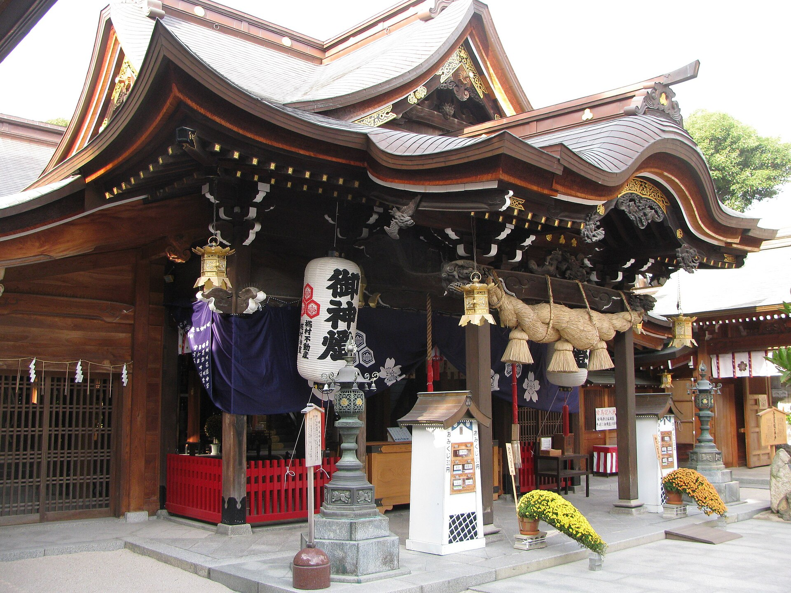

お櫛田さん
博多っ子に親しまれる総鎮守
櫛田神社（くしだじんじゃ）は、博多の氏神・総鎮守として「お櫛田さん」の愛称で広く親しまれている歴史ある神社です。
長寿延伸や商売繁盛の神様として篤く信仰されており、博多の夏の風物詩である大祭「博多祇園山笠」が奉納されることでも全国的に有名です。
櫛田神社の主な見どころ
飾り山笠（一年中展示）
境内には、博多祇園山笠で使われる迫力満点の「飾り山笠」が常設展示されており、いつでも見学できます。
博多の伝統祭事
7月の「博多祇園山笠」や、秋の「博多おくんち」など、博多を代表する祭りの中心地として賑わいます。
力石（ちからいし）
有名力士たちが力を奉納するために持ち上げた石が残されており、長寿や力量試しの名所となっています。
施設情報
| 所在地 | 福岡県福岡市博多区上川端町1-41 |
|---|---|
| 主祭神 | 大幡主命（櫛田宮）、天照皇大神（大神宮）、素盞嗚鳴命（祇園宮） |
| 参拝時間 | 本殿開門 4:00～22:00（授与所 9:00～17:00） |
| 拝観料 | 無料（博多歴史館は有料） |
| アクセス | 地下鉄七隈線「櫛田神社前駅」より徒歩約1分 / 地下鉄空港線「祇園駅」より徒歩約5分 |